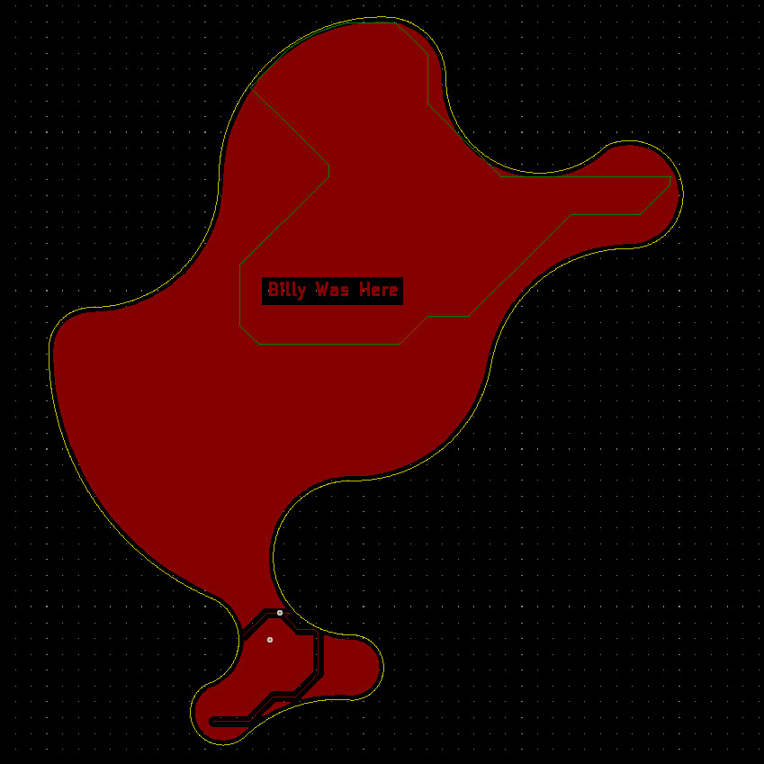

This template is based on the OSH Park specifications and PCB Design Rule Settings.
Two Layer Service
OSH Park Design Rules
This Template was Developed By Billy Bogardus.
OSH Park is not responsible for the accuracy of this file.
By Downloading/Possessing This file the end user accepts responsibility to check and set the proper design rules.

(c)2015 Jonathan Iapicco.